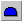
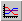
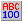
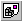
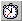
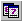

Adding objects to pictures
Using the Shapes toolbar, you can add an array of different objects to your picture. The following table shows you which objects are available and how to add them using the toolbar buttons:
|
Rectangles. |
|
|
Straight lines. |
|
|
Ovals. |
|
|
Arcs (curved line segments). |
|
|
Rounded rectangles. |
|
|
Polygons. |
|
|
Polylines (two or more connected line segments). |
|
|
 |
Chords (a curved line connecting a line segment). |
|
Pie shapes (wedges of a circle). |
|
|
Text. |
|
|
 |
Charts (compound objects made of lines, text, and rectangles). |
|
Bitmaps. |
|
|
 |
Data links. |
|
Alarm Summaries. |
|
|
Variable objects. |
|
|
 |
OLE objects. |
|
 |
Timer Objects. |
|
Event Objects. |
|
|
Current Time (a text object). |
|
|
 |
Current Date (a text object). |
By default, all of the buttons in the above table appear in the Toolbox when you create or open a picture. If you have the Toolbox enabled, you can add objects to your pictures by clicking the appropriate button on the Toolbox.
A powerful feature of the DeltaV system is the capability to add ActiveX controls (OCXs) to your pictures. ActiveX controls provide functionality to your pictures without your having to write complex code. Because of its open architecture, DeltaV Operate allows you to drag and drop any third-party object (OCX) into your displays.
Because third-party objects are self-contained applications in themselves, you should be aware that problems that occur from these components are beyond the control of Fisher-Rosemount Systems.
Drawing Shapes
Once you select a shape (that is, a rectangle, rounded rectangle, oval, line, polyline, polygon, arc, chord, or pie), it is easy to add it to a picture.
Some shapes are drawn by defining a series of points using the mouse. For example, to draw an arc you do the following:
Click the Arc button from the Shapes toolbar or the Toolbox, if enabled. The cursor changes to a plus sign.
Position the cursor where you want the first point of the arc to appear and click.
Move the cursor to define the width of the arc and click the mouse. An arc appears on the screen.
Move the cursor until the height of the arc is the correct size and click.
See the following illustration.
Similarly, you draw a chord as illustrated in the following figure:
And you draw a pie as illustrated in the following figure:
Adding a Chart
To add a chart to your picture, click the Chart button on the Shapes toolbar. If you have the Toolbox enabled, click the button on the Toolbox. The cursor becomes a plus sign. Click and drag the mouse in an area of the picture where you want to place the chart. A multi-pen chart appears on the screen, and the chart and chart pens also appear in the system tree.
By double-clicking the chart, you can define properties for the chart using the Chart Properties dialog box. The properties available depend on the data source selected, or pen type.
Trending Real-time Data in Your Picture
If you choose a real-time pen, certain properties are enabled or disabled, as shown in the following table. Real-time pens can also include T_DATA from Trend blocks.
|
Fixed Date |
Disabled |
|
Fixed Time |
Disabled |
|
Days Before Now |
Disabled |
|
Duration Before Now |
Disabled |
|
Duration |
Enabled |
|
Interval |
Disabled |
To plot real-time data, you must define a pen type that accesses a real-time data source. To do this, click the Chart tab on the Chart Configuration dialog box and, at the top of the tabbed page, enter a real-time data source in the Data Source field. Use Data Server.node.tag.field format. You can also use a local node alias by selecting DVSYS from the list. Alternately, you can click the Browse button to display the Expression Builder, which allows you to search global data sources through a data source browser. To learn how to use the Expression Builder and define data sources, refer to Animating Object Properties.
Once you have defined a real-time data source for the pen, you can define how the data is presented by the configured pen(s). Using the data area of the Chart tabbed page, you can configure pen properties, pen styles, X and Y axis properties, time ranges, grid styles. You can also define general chart properties such as a name and description, scroll direction, attributes, and appearance.
Default settings for charts are set in the Chart Preferences tabbed page of the User Preferences dialog box.
Adding Text
A text object is a collection of characters within an invisible rectangle. To add text to your picture, click the Text button on the Shapes toolbar or the Toolbox, if enabled.
The default font properties for text are defined on the Shape Preferences tabbed page of the User Preferences dialog box. To change a font option for new objects, make the appropriate selections in the Font area. For example, to change the size of the font, enter a point size in the Font Size field.
If you use text with an italic font style in your pictures, the text may not always appear as expected. If the text appears clipped in your picture, use the handles to resize the text block. Selecting a different font may also correct this problem.
Using small fonts can cause the text to be distorted in the runtime picture. As an example, the recommended size should not be less than 9pt in the Arial typeface. If the text is distorted, you can increase the font size or reduce the height of your picture. Refer to Customizing the DeltaV Operate Environment for more information on resizing the pictures.
For more information on Shape Preferences, refer to Coloring and Styling Objects in the Performing Advanced Functions with Objects topic.
Adding a Bitmap Image
With DeltaV Operate, it's easy to work with bitmaps that were created using other applications. By simply clicking the Bitmap button, you can place a bitmap of your choice wherever you want in your picture, and then work with the image like you would any other object. For more information on working with bitmaps, refer to Working with Bitmaps in the Working with Other Applications topic.
Adding Data Links
The following options are available on the Data link dialog box, which appears when you add a Data link.
Access to any data source
Data entry
Flexible display formatting
Definable output error messages
Once you add a Data link, you can access this dialog box by selecting DataLink Custom Page from the Data link's pop-up menu. To add a Data link to your picture, click the Data link button on the Shapes toolbar or the Toolbox, if enabled. Click and drag to the area you want to place the Data link and release the mouse.
Entering a Data Source
You can display data from any valid data source using your Data link. In the Source field, enter the data source you want. You can also select from the Expression Builder by clicking the Browse button.
Enabling Data Entry
To allow operators to enter data into the Data link, select In-Place from the Type field's drop-down menu. This lets you enter data in-place, meaning you can display data as you enter it in the Type field. In the run-time environment, data entered is written to the appropriate database tag during the next scan cycle. When you enable data entry, you can require that operators confirm that they want this data to be written to the database before it is sent. To require confirmation, select the Confirm check box.
If you want users to be able to navigate within edit fields with the arrow keys, redefine or delete the LeftArrow and RightArrow macros from the Key Macro Editor. (By default key macros configure the Left, Right, Up, and Down arrow keys to move popup pictures from one monitor to another.)
To help you configure data, use the Data Entry Expert. This expert lets you determine which data source the Data link receives its data from, and how that data appears. Use the Data Entry Expert to create the following types of data entry:
Numeric/Alphanumeric
Slider
Pushbutton
Ramp
You can access the Data Entry Expert from the Task Wizard. For more information on the fields of the expert, refer to DeltaV Operate Experts.
You can also create custom types of entry in VBA. For more information on VBA, refer to Writing Scripts.
Formatting Data
DeltaV Operate lets you format the data you want to display in the Data link. First, you must choose one of the following types of data to display:
Raw
Numeric
Alphanumeric
To display data in its raw (or native, C code) format, select the Raw Format check box. You can then edit the format by entering a C format string in the Format field. You can also enter a string of any kind preceding the raw format string (to introduce what the data string represents, for example).
To format numeric data, first select Numeric from the Type field's drop-down menu. Next, enter an integer from 0 to 7 to represent the:
Whole digits – the number of digits displayed before the decimal point.
Decimal digits – the number of digits displayed after the decimal point. This value is rounded off to fit into the number of digits specified for the Data link.
The following table shows some examples of how formatted numbers affect the way the Data link displays in the run-time environment.
To format a Data link to display scientific notation, first select a A_CV field, enable the Raw Format check box, and specify %s in format field. To display a leading zero in the link, use the F_CV field and the raw format similar to %02.2f.
To format alphanumeric (or text) data, first select Alpha-Numeric from the Type field's drop-down menu. Next, enter in the appropriate fields the number of lines and the number of characters per line you want to display in the Data link. You can also justify the data to the left, right, or center, by making the appropriate selection from the Justify field.
Using Tag Groups in Data Links
When using tag groups in data links and using raw format strings, you must be sure to match data types between the values and the format string.
For example, if the tag used is going to be replaced by the value of DVSYS.AI1.F_CV, the format string must be %f, or some derivative (i.e. %7.2f). The default when entering a tag group is %s, or string. If you do not adjust this and the types do not match, no formatting will occur and you will only get the value.
Configuring the Output Error Mode
The Error Configuration area of the Datalink dialog box lets you determine how error conditions are displayed by the Data link should they appear. You can configure the output to derive its value from:
An error table, or
The current value.
The default for the Output Error Mode setting in the definition of a Datalink is the Use Error Table option, causes an animation to display values as configured on the Animations Data Error Defaults tab of the User Preferences dialog. In contrast, the Use Current Output option causes an animation to display whatever data is returned at the time an error occurred, even if it currently has a bad status. It is recommended that you specify the default option, Use Error Table.
For more information on output values and definitions, refer to Classifying Animations Errors in the Defining Data Sources topic.
You can also display system information using the Data link. To do this, add a Data link to your picture as described in this section. When selecting a data source, use the format DVSYS:system:system field. This Data link can display a number of different system parameters of a particular node. Refer to the Database Manager online help for a list of system parameters.
Adding an Alarm Summary Object
Using Alarm Summary objects in your pictures gives you an effective way to monitor, acknowledge, sort, filter and save alarms using an ActiveX control. You can also color-code alarms by alarm status and priority in order to provide operators with visual cues.
To add an Alarm Summary object to your picture, click the Alarm
Summary button
 on the DeltaV Advanced
toolbar. This button is also available on the DeltaV Toolbox.
on the DeltaV Advanced
toolbar. This button is also available on the DeltaV Toolbox.
The Alarm Summary object appears as a spreadsheet that you can modify in both the configuration and run-time environments (depending on which run-time options are enabled). For example, you can resize the object using the object's handles, resize the columns in the spreadsheet, or select rows in the spreadsheet in both environments. You can customize the object's toolbar. Additionally, you can perform many functions using the object's context menu.
Up to 18 Alarm Summary objects can be active at the same time in the DeltaV Operate run-time environment. This limit includes full-size pictures such as the Alarm Filter, Alarm List, Alarm Suppress, and Alarm Summary pictures, as well as smaller alarm summary objects on faceplates or other pictures. Using more than 18 will result in some Alarm Summary objects on a picture (above the 18 active limit) not being able to receive alarm information.
Refer to The DeltaV Alarm Summary Object or the DeltaV Operate help for more information on using the Alarm Summary object.
Inserting an alarm summary into a VBA form may cause unpredictable results when opening the picture or switching environments from run-time to configuration or vice versa.
Adding Push Buttons
Push buttons are a visually effective way to invoke an action in your picture. They can help you:
toggle tags between Automatic and Manual mode
open and close pictures
toggle digital tags between OPEN and CLOSE
manipulate files
run other applications
To add a Push Button to your picture, click . Edit the script to invoke the action you want on the picture.
When adding a push button to a picture that will be used on a remote workstation, add a datalink to the picture that references the module used in the push button. This resolves the reference when the picture opens and allows the push button to work on the remote workstation.
If a grouped object contains an ActiveX control it handles the click event. Thus, you should not apply experts to a grouped object that contains an ActiveX control, nor should you apply experts to non-ActiveX control objects and then group them with ActiveX control objects. You can, however, apply an expert to an ActiveX object and then group it with other non-ActiveX control objects. For more information on ActiveX controls, refer to the Using ActiveX Controls topic.
Adding Variable Objects
By clicking the Variable object button, you can assign a variable object to your picture or globally to the entire system. The variable can represent different values at different times. The variables you assign include the following:
Boolean
Byte
Short
Long
Float
Double
String
To create a Variable object, click the Variable object button on the Shapes toolbar or the Toolbox, if enabled. Next, complete the fields on the Create a Variable Object dialog box. To name a variable object, enter the name in the Variable Name field. The name must be consistent with VBA conventions. For more information on the various fields, click the Help button.
When adding a Variable object, use the @MOD@ placeholder format only if the Variable object is in a group. Using @Mod@ in a Variable object that is at the top level of a picture can cause resource problems.
Adding OLE Objects
DeltaV Operate lets you insert a variety of OLE objects into your pictures. To insert an OLE object, click the OLE Object button on the Shapes toolbar. If you have the Toolbox enabled, click the button on the Toolbox.
You have three choices on the Insert dialog box for inserting an OLE object: Create New, Create from File, and Create Control.
Creating New OLE Objects
The Create New option button allows you to select from a list of objects registered on the local node. To add a specific object, double-click it from the Object Type list box. For more information on adding controls, refer to the Create a Control for an OLE Object section that follows.
Creating an OLE Object from a File
The Create from File option button lets you insert the contents of a file into a new object in your picture. You can either select a file from the File field or click the Browse button to select a file from any available directory.
Creating a Control for an OLE Object
The Create Control option button allows you to add an ActiveX Control (OCX) to a new object in your picture. Click Add Control to display a browse dialog where you can select an OCX installed on the local node. When you select the file, a new object is inserted into your picture with the specified control. When you switch to the run-time environment, you activate the object with the control you selected.
Adding a Third-Party Control
When adding third-party controls to a picture, some controls may display a message similar to the following:
<OCX name>: License file for custom control not found...
The reason you get this message is because you are adding a control that you do not have the license for. We recommend that you delete the control from your picture or install the license for this control and re-insert the control.
Animating the String Property of an OLE Control
To animate the String property of an OLE Control, you must ensure that the data source is of a string type by doing one of the following:
Connecting directly to an A_field.
Using a Format object to convert a F_field to a string format.